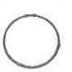
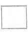
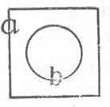
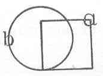

Kant: AA XVI, L §. 292. 293. IX 101-104. §. 17-23. ... , Seite 627 |
|||||||
Zeile:
|
Text:
|
|
|
||||
| 3036. η? κ-λ? L 81'. Gegenüber von L §. 292 Schlusssatz und §. 293 Satz 1, 2: |
|||||||
| 03 | Von den besonderen Urtheilen ist zu merken: daß, wenn sie durch | ||||||
| 04 | die Vernunft sollen können eingesehen werden und also eine rationale, | ||||||
| 05 | nicht blos intellectuale (abstrahirte) Form haben, so muß das subiect | ||||||
| 06 | conceptus latior als das subiect praedicat seyn. Es sey das praedicat | ||||||
| 07 | iederzeit =  das subiect , so ist ein besonderes |
||||||
| 08 | Urtheil; denn einiges unter a gehörige ist b, einiges nicht b. Das folgt aus | ||||||
| 09 | der Vernunft. aber es sey  , so ist kann zum Wenigsten |
||||||
| 10 | alles a unter b enthalten seyn, wenn es kleiner ist, aber nicht, wenn es | ||||||
| 11 | größer ist, also ist es nur zufalliger Weise partikular. | ||||||
3037. κ3? μ? (η2?) γ2?? L 81. Neben L §. 292 Satz 3, unter 6256: |
|||||||
| 13 | Ein Urtheil ist das Verhaltnis (g Erkentnis ) der Verknüpfung oder | ||||||
| 14 | des Wiederstreits der Begriffe. | ||||||
| [ Seite 626 ] [ Seite 628 ] [ Inhaltsverzeichnis ] |
|||||||
;){kind=link}
;){kind=link}
;){kind=link}
;){kind=link}